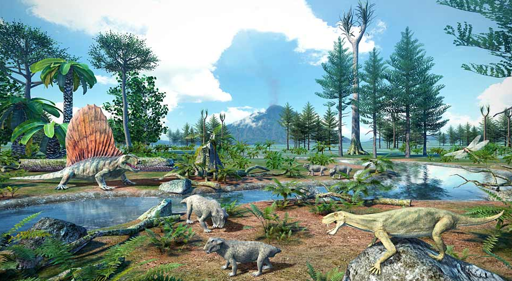
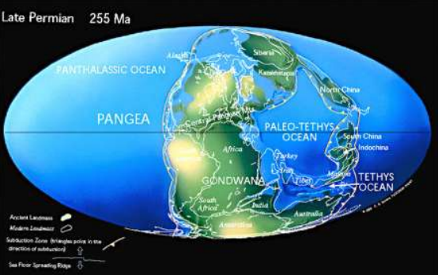

The Permian Period is the last period of the Paleozoic Era and is known for the formation of the supercontinent Pangaea and for the end-Permian extinction event, the largest mass extinction in Earth's history.
Life Forms during this Period
Diversification of reptiles that are spread across continents; appearance of therapsids (mammal-like reptiles).

Geological Features during this Period
Pangaea forms and 90% of Earth's species become extinct due to volcanism in Siberia. This marks the end of trilobites, ammonoids, blastoids, and most fish.
